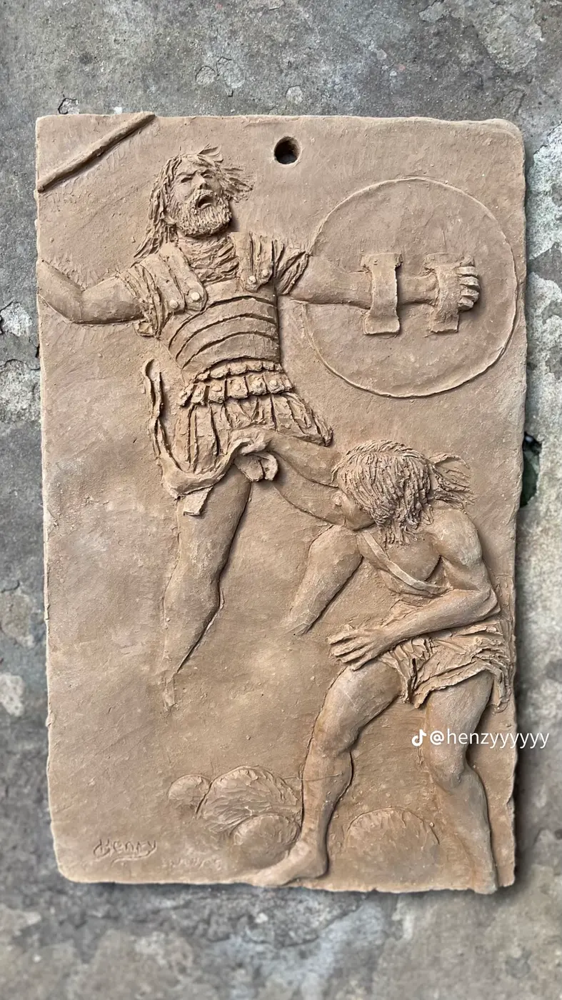

About
The hands
behind Bobo.
A sculptor working mainly in clay, making relief portraits, figurative panels, animals and heritage pieces, and sharing the process along the way.

The artist
Sculpting every day,
in public.
Boboarts is the studio name of a self-driven sculptor who set out to show a new piece every day until the work spoke for itself. Each sculpture begins with a reference, whether a photograph, a person or an animal, and is built up, carved and refined by hand.
The work moves between intimate relief portraits, dramatic figurative panels inspired by classical sculpture, animal studies in the round, and pieces that draw on heritage art and masks.
Approach
How a piece
comes to life
Reference
Studying the subject from photographs or life: proportion, light and character.
Block-in
Building the base form in clay and setting the big shapes and depth of the relief.
Detail
Carving and modelling the hair, texture, muscle and expression that make it feel alive.
Finish
Drying, finishing and preparing the piece to be displayed, delivered or collected.
Influences
Classical form,
African roots.
Muscular figurative panels nod to classical relief carving, while masks and portraits draw from the long tradition of heritage sculpture. The common thread is the human face and body, rendered honestly in earth.
Commission the artist →